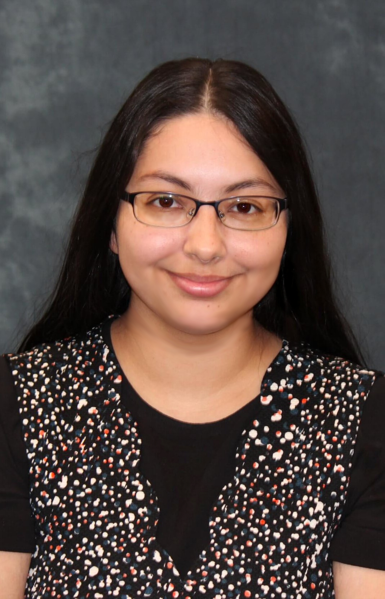

Department of Statistics, Texas A&M University
Office: Blocker Building 419 (BLOC 419)
Email: rrkulkarni [at] tamu [dot] edu

I am broadly interested in statistical theory and methodology, particularly in the areas of Bayesian statistics, machine learning, and applied data analysis. My current research focuses on wavelet transformations for signal processing, and I am exploring methods to enhance diversity in signal representation using entropy-based techniques.
I have served as a Teaching Assistant for multiple undergraduate and graduate statistics courses at Texas A&M University, including introductory statistics for life sciences, time series analysis, and design of experiments. I assist with grading, office hours, and tutoring support.